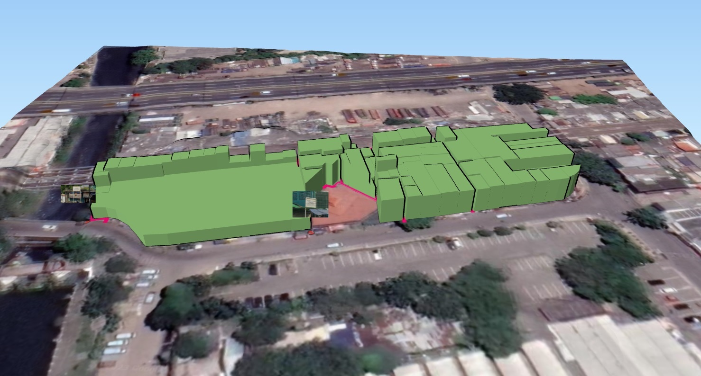
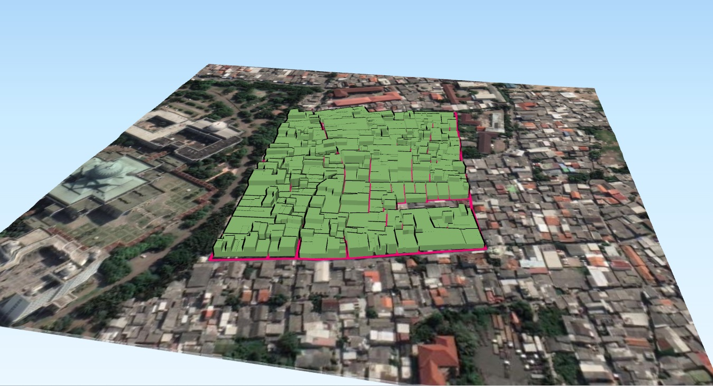
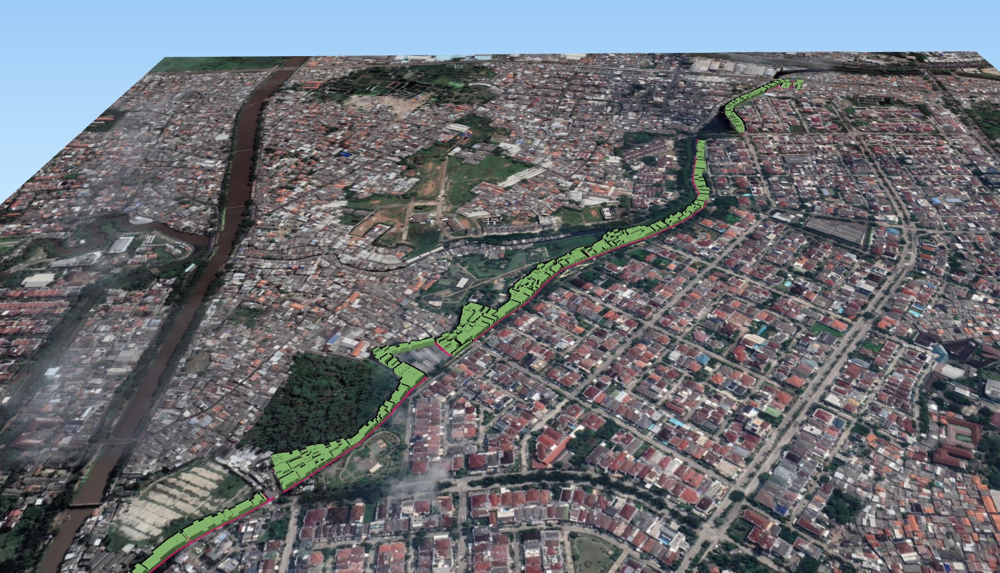
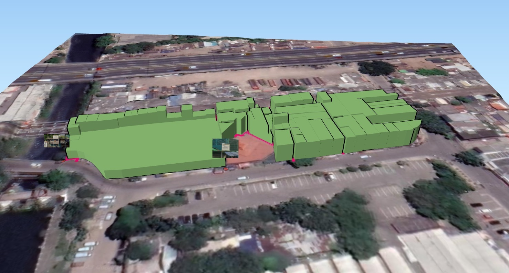
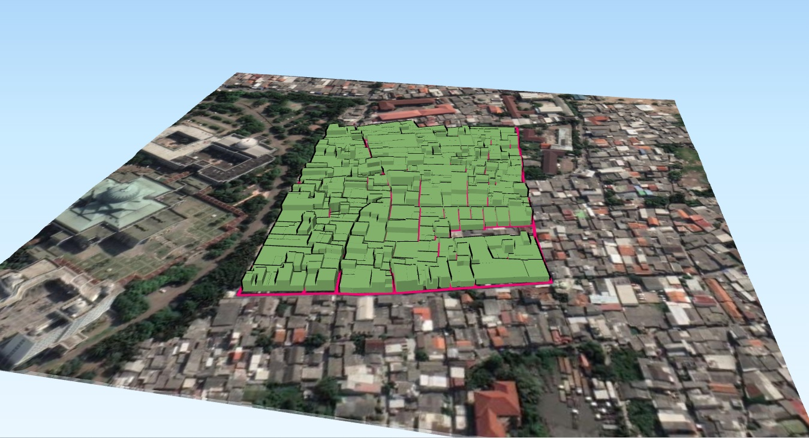
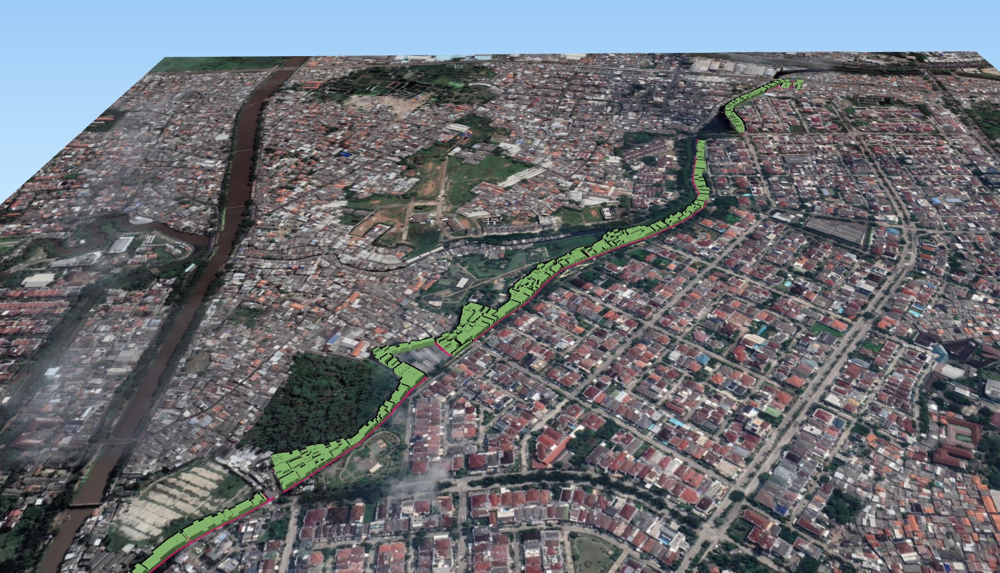

MODEL 3D BANGUNAN HASIL INVENTARISASI PERTANAHAN
Building Information Modeling (BIM) adalah salah satu teknologi di bidang AEC (Arsitektur, Engineering dan Construction) yang mampu men-simulasikan seluruh informasi di dalam proyek pembangunan ke dalam model 3 dimensi. Pada pengaplikasiannya, BIM memang digunakan pada bidang konstruksi dimana teknologi ini dapat mampu menghemat waktu pengerjaan, biaya yang dikeluarkan serta tenaga kerja yang dibutuhkan. Namun seiring perkembangan waktu, BIM telah diintegrasikan kedalam Sistem Informasi Geografis (SIG) untuk meningkatkan visualisasi data spasial dengan mentransformasikan data dari 2 dimensi kedalam data 3 dimensi. Dengan visualisasi 3 dimensi ini maka peta bangunan dapat menjadi lebih informatif dan interaktif.
Dalam kegiatan inventarisasi pertanahan ini, objek yang dikaji adalah kampung yang memiliki kepadatan bangunan yang tinggi. Apabila bangunan padat di kampung disajikan dalam bentuk 2 dimensi, maka tipologi bentuk kampung menjadi kurang terlihat. Bentuk bangunan serta elevasi bangunan dapat terlihat jelas apabila disajikan dalam bentuk 3 dimensi. Selain meningkatkan di sisi visualisasi, BIM ini juga menyimpan informasi atribut didalamnya. User dapat meng-klik setiap bangunannya untuk mendapatkan seluruh informasi berkaitan dengan hasil inventarisasi lahan dan bangunan tersebut.
 




